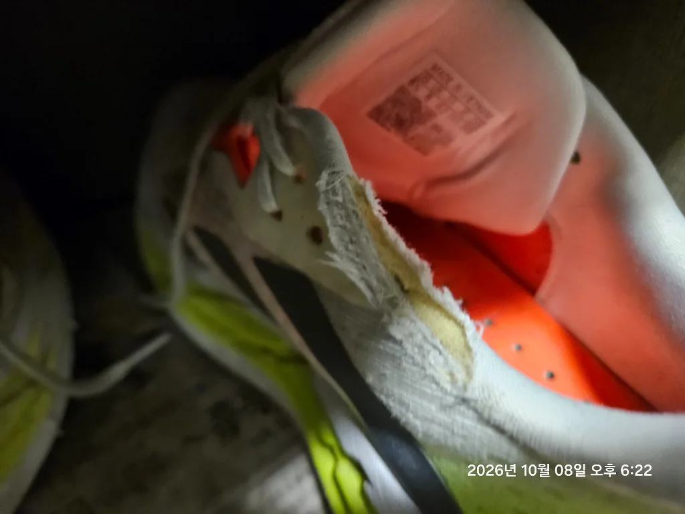

달릴 때 무릎 안쪽이 아플 때: 거위발건염 원인과 푸는 운동
- 무릎 관절선보다 3~5cm 아래쪽 정강이뼈 안쪽을 눌렀을 때 유난히 아프다면, 연골이 찢어진 게 아니라 세 힘줄이 스치며 붓는 거위발건염일 가능성이 높습니다.
- 발을 디딜 때 발목이 안으로 무너지거나 엉덩이 바깥쪽 근육이 약해 무릎이 안쪽으로 꺾이면, 힘줄 아래 물주머니가 계속 눌려 통증이 생깁니다.
- 무작정 쉬기만 하기보다 허벅지 안쪽 풀어주기, 뒷허벅지 늘리기, 엉덩이 바깥쪽 힘 기르기 3단계를 함께 해야 다시 아프지 않습니다.
1. 연골이 상한 걸까, 힘줄이 부은 걸까? (혼자 확인하는 법)
달릴 때 무릎 바깥쪽이 아픈 대표 부상이 장경인대 통증이라면, 무릎 안쪽 통증의 상당수는 '거위발건염'입니다.
무릎 안쪽이 욱신거리면 덜컥 "연골이 찢어진 건 아닐까?" 하고 걱정하기 쉽지만, 손가락으로 아픈 자리를 눌러 보면 쉽게 구별할 수 있습니다.
| 구분 기준 | 무릎 안쪽 연골 손상 | 거위발건염 / 물주머니 염증 |
|---|---|---|
| 아픈 위치 | 무릎 관절 틈새 정중앙 | 무릎 관절보다 아래로 3~5cm 내려간 정강이뼈 안쪽 |
| 눌렀을 때 반응 | 관절 깊은 곳이라 겉을 눌러도 위치가 애매함 | 그 자리를 손가락으로 누르면 깜짝 놀랄 만큼 따갑고 아픔 |
| 주요 증상 | 무릎이 갑자기 걸려 펴지지 않거나 딸깍 소리가 남 | 계단을 내려갈 때, 양반다리로 앉을 때 욱신거리고 아침에 뻣뻣함 |
2. 왜 하필 '거위발'이라 부르고, 왜 아플까요?
'거위발'이라는 재미있는 이름은 허벅지 앞·안·뒤쪽에서 내려오는 3개의 근육 힘줄이 정강이뼈 안쪽에 나란히 모여 붙는 모양이 거위의 물갈퀴 발을 닮았다고 해서 붙은 이름입니다.
- 허벅지 앞쪽을 대각선으로 가로지르는 근육 (봉공근)
- 허벅지 안쪽을 오므리는 근육 (박근)
- 허벅지 뒤쪽 안쪽 근육 (반건양근)
달릴 때 발바닥 아치가 주저앉아 발목이 안쪽으로 꺾이거나, 엉덩이 바깥쪽 근육이 약해 골반이 한쪽으로 툭 떨어지면 무릎도 덩달아 안쪽으로 휘어집니다. 이때 세 힘줄과 뼈 사이에서 쿠션 역할을 하던 물주머니(점액낭)가 맷돌에 갈리듯 눌리면서 열이 나고 염증이 생깁니다.
아래 사진은 필자가 실내 러닝머신 장거리 달리기와 야외 조깅으로 750km 이상 신은 아디다스 아디스타 2의 실제 모습입니다. 오래 달리며 다리에 힘이 빠지자 양발 사이 간격이 좁아지면서, 왼쪽 신발 밑창 모서리가 오른쪽 신발 복사뼈 안쪽 천을 계속 긁어 안감이 찢어졌습니다. 달릴 때 두 발이 가운데 선 안쪽으로 너무 붙어서 달리면 신발끼리 부딪힐 뿐 아니라, 무릎 안쪽 거위발 부위에도 계속 비틀리는 힘이 쌓입니다. 신발 안쪽에 이렇게 긁힌 자국이 자주 생긴다면 발 간격을 조금 넓히고 엉덩이 근력을 점검해 보는 것이 좋습니다.

3. 거위발건염을 낫게 하는 3단계 회복 운동
거위발건염은 무조건 쉬기만 해서는 잘 낫지 않습니다. 팽팽하게 당겨진 근육을 풀어주고, 착지할 때 무릎이 안으로 무너지지 않게 엉덩이 힘을 길러주어야 합니다.
| 단계 | 핵심 운동 | 따라 하는 방법 | 기대 효과 |
|---|---|---|---|
| 1단계 (풀어주기) | 허벅지 안쪽 폼롤러 문지르기 | 엎드려 한쪽 다리를 개구리처럼 옆으로 벌리고 허벅지 안쪽을 2분간 천천히 굴리기 | 허벅지 안쪽 근육의 뭉침을 바로 풀어줌 |
| 2단계 (늘려주기) | 뒷허벅지 부드럽게 늘리기 | 의자에 발을 올리고 발끝을 바깥으로 살짝 돌린 뒤 허리를 펴고 상체 숙이기 (30초씩 3번) | 무릎 안쪽으로 연결된 뒷허벅지 힘줄 유연성 회복 |
| 3단계 (힘 기르기) | 옆으로 누워 무릎 벌리기 (클램쉘) | 밴드를 허벅지에 끼고 옆으로 누워 뒤꿈치를 붙인 채 위쪽 무릎 벌리기 (15회씩 3세트) | 엉덩이 바깥쪽 힘을 키워 무릎이 안으로 꺾이는 것을 막음 |
4. 다시 달릴 때 꼭 지킬 3가지 요령
손가락으로 눌렀을 때 날카롭던 통증이 가라앉았다면, 아래 세 가지를 지키며 천천히 달리기를 다시 시작하세요.
- 안쪽을 받쳐주는 신발이나 깔창 쓰기: 발목이 안으로 많이 무너지는 편이라면 발 안쪽 바닥을 단단하게 받쳐주는 안정화 신발이나 아치 깔창이 큰 도움이 됩니다.
- 보폭을 10% 줄이고 발걸음 수 늘리기: 보폭을 성큼성큼 크게 내디디면 무릎 안쪽에 실리는 충격이 커집니다. 보폭을 줄이고 발을 빠르게 옮기면 무릎 부담이 훨씬 줄어듭니다.
- 내리막길과 한쪽 방향 트랙 피하기: 운동장 트랙을 왼쪽으로만 계속 돌면 안쪽 다리에 무리가 쌓입니다. 회복 중에는 평평한 길을 달리거나 트랙 방향을 번갈아 가며 뛰는 것이 좋습니다.
무릎 관절에 무리 없는 내 맞춤 조깅 페이스는?
지면 충격을 최소화하는 Zone 2 회복 페이스와 이번 주 부상 방지 7일 플래너를 1초 만에 무료로 진단해 보세요.
⚡ 내 맞춤 심장연비 & 안전 페이스 진단하기🫀 부상 없이 회복하는 내 몸의 안전 심박수는?
220-나이 단순 공식의 한계를 극복하고, 아침 안정시 심박수(RHR)와 여유심박수를 반영한 나만의 안전 회복 Zone 1~2 심박수를 계산해보세요.
🫀 카보넨 정밀 심박존(Zone 1~5) 계산기 실행하기 ›